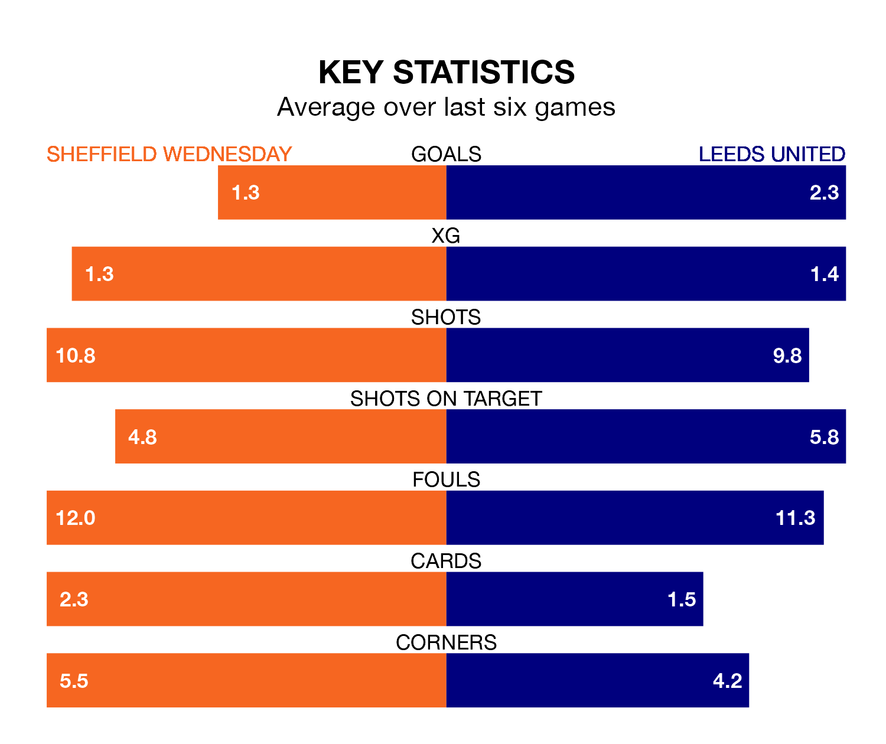

Struggling Sheffield Wednesday face Leeds United at Hillsborough on Friday looking to build on a win in their last league outing.
After securing all three points with a 1-0 victory over Plymouth Argyle on Tuesday, the Owls sit 23rd in the EFL Championship.
They travel to play a Leeds side third in the standings, who also won their last match, 1-0 against Stoke City.
With 30 goals in 36 games so far this season, Wednesday are the league's joint-second-lowest scorers with 0.8 goals per game. And they are conceding more than average, letting in 53 goals at a rate of 1.5 per game.
Leeds, meanwhile, are above average scorers, with 1.8 goals per game, compared to a league average of 1.4. They have conceded 0.8 goals per game.
With Illan Meslier between the sticks, United can rely on one of the league's safest pair of hands. He has kept 15 clean sheets in his 34 appearances this season, and no 'keeper has prevented the opposition scoring more often in the EFL Championship.
In the Owls's net, James Beadle has five clean sheets in nine games. He has conceded a goal every 90 minutes, 50% more often than the 131 minutes between goals for Meslier.
The hosts are in fantastic form in the EFL Championship, with five wins and one loss from their last six games.
But with five wins and a draw over that period, the away side's form is even better – they have taken 16 points from 18, compared to Wednesday's 15.
In the last 10 years, Wednesday and Leeds have played each other on 13 occasions. They won four each, and they drew five times.
On average, the Owls scored 1.0 goal and Leeds 0.8 in those matches.
Their last meeting was on September 2, when they played out a 0-0 draw.
Friday's match will be refereed by Samuel Allison, who has taken charge of 12 EFL Championship games so far this season, issuing one red card and booking 49 players. He has awarded one penalty.
The last Leeds game Allison refereed was the 3-1 win at home against Swansea City on November 29. He is yet to oversee a match featuring Wednesday this season.
Updated: 09:34 (UTC), 08/03/24